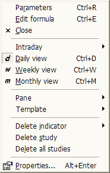

Chart context menu

This context menu appears when you click with the RIGHT mouse button over the chart
pane.
Available options:
- Parameters... - brings up the Parameters dialog, allowing you to modify parameters
of indicators, as well as colors, styles, scaling, and axes settings
- Edit Formula... - brings up the Formula Editor, allowing you to view/modify
the AFL code of the indicator
- Close - closes the chart pane
- Intraday ... - allows you to switch the viewing time frame to one of the available
intraday intervals
- Daily view - switches the viewing interval to daily
- Weekly view - switches the viewing interval to weekly
- Monthly view - switches the viewing interval to monthly
- Pane
- Close - closes the chart pane
- Arrange all - arranges all panes to equal height
- Move up - moves the selected chart pane up (switches the pane's vertical order)
- Move down - moves the selected chart pane down (switches the pane's vertical
order)
- Maximize - maximizes the selected pane so it fills the entire screen
- Restore - restores the selected pane to its previous size
- Template
- Load... - loads a single-window chart template from the selected file
(more on templates and layouts
here)
- Save... - saves a single-window chart template to the selected file
- Load default - loads the default single-window template
- Save as default - saves the current single-window setup as the default template
- Delete indicator - deletes one of the drag-and-drop indicator sections found
in the code
- Delete study - deletes the selected manually drawn study (like a trend line,
Fibonacci, Gann...) - more on this here
- Delete all studies - deletes all manually drawn studies (like a trend line,
Fibonacci, Gann...)
- Properties - displays properties (coordinates, colors, etc.) of a manually
drawn study (like a trend line,
Fibonacci, Gann...). More on this here and here.